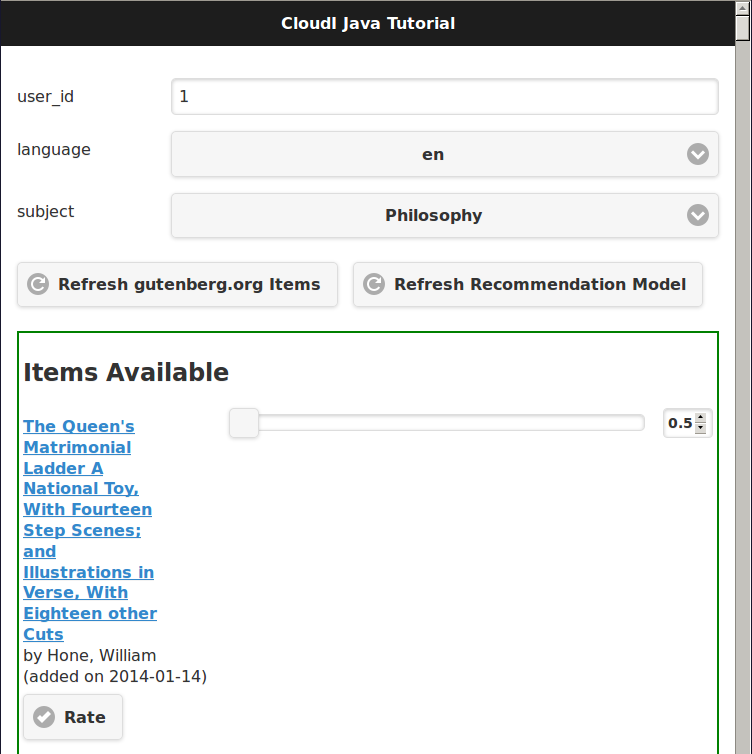
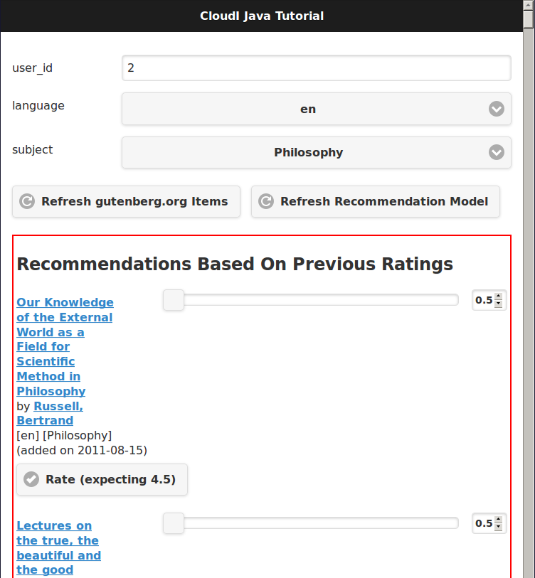

Reliable Book Recommendations
For an example of how CloudI can provide fault-tolerance for CloudI services implemented in Java we will explore how books can receive reliable recommendations. We will use books data from Project Gutenberg and Java source code from the Apache Mahout to provide reliable book recommendations.
Why Does Java Source Code Need CloudI To Be Reliable?
Any actively developed source code may have software errors which cause a system to fail but fault-tolerance makes the failure isolated (both in time and area). With a software system gradually changing as requirements are added or removed it is important that reliability remains constant, despite developer mistakes. While Java development relies upon exception handling for any runtime problems the scope of failures that exception handling can resolve is very limited. If you consider the potential for memory leaks or corruption with Java Native Interface (JNI) usage, threading deadlocks or race conditions and memory exhaustion, it should be easy to understand that failures may occur in many unexpected ways.
Limiting the scope of a failure in Java source code requires isolated memory to ensure the failure is isolated. The Java Virtual Machine (JVM) relies on the use of global state with stop-the-world Garbage Collection to manage its use of memory. However, the lack of isolation in the JVM requires external management to limit the scope of failures within Java source code.
Typically Java source code uses an application server to provide external management as an Operating System (OS) process and CloudI provides application server functionality. Many Java application servers include Java Message Service (JMS) and various Enterprise Service Bus (ESB) solutions exist for use in Java source code. CloudI provides its own Enterprise Service Bus specifically for CloudI services so that service messaging and service lifetime can both be managed efficiently while keeping service memory isolated. The approach in CloudI simplifies development so the focus can remain on business logic while CloudI handles any fault-tolerance or scalability concerns of the source code.
What Do Book Recommendations Look Like In CloudI?
The source code used in this tutorial is available at https://github.com/CloudI/cloudi_tutorial_java but we should first consider how this source code works with an overview. A single Java CloudI service is used to provide a REST API that handles book recommendations with the following Uniform Resource Locator (URL) path suffixes:
| URL Path Suffix | HTTP Method | CloudI Service Name Pattern Suffix |
|---|---|---|
item/refresh |
POST |
item/refresh/post |
item/list |
POST |
item/list/post |
language/list |
POST |
language/list/post |
subject/list |
POST |
subject/list/post |
recommendation/refresh |
POST |
recommendation/refresh/post |
recommendation/update |
POST |
recommendation/update/post |
recommendation/list |
POST |
recommendation/list/post |
client |
GET |
client/get |
The table above shows how the HTTP method becomes a suffix on the URL path to create the CloudI service name pattern suffix (cloudi_service_http_cowboy adds the HTTP method as a suffix in lowercase when sending the HTTP request data as a CloudI service request).
When the CloudI service is configured, a service name pattern prefix is provided to describe the scope of the service.
For the book recommendation Java service, the prefix "/tutorial/java/service/" is used so the full service name pattern for the table’s first entry becomes "/tutorial/java/service/item/refresh/post".
A CloudI service name pattern suffix is used with a subscribe CloudI API function call to declare a service process will accept service requests with a matching service name.
When multiple processes and multiple threads are specified in the configuration of a CloudI service (with a count greater than 1), the same service will naturally call the subscribe CloudI API function more than once to declare multiple subscriptions.
A CloudI service that sends a service request with a matching service name will have the service request delivered to a service thread that is randomly selected from the available subscriptions.
Using random selection of a destination that matches the service name keeps the fault-tolerance of the receiving service constant (i.e., with the same probability of a failure for each receive).
All CloudI service request receives depend on a previous call to the subscribe CloudI API function.
However, both the send_sync and send_async CloudI API functions send a service request to a single destination.
To send a service request to all destinations that match a service name requires using the function mcast_async in the CloudI API, which is similar to publish functionality in other messaging systems.
What Is The Structure Of The Book Recommendation Service?
All services are structured for a 3 part sequence: initialization, handling-requests, and termination.
During CloudI service initialization, data structures are initialized to confirm that the service is ready for a runtime that may last indefinitely (making the initialization stage the most critical stage for a service’s reliability).
Inside the service initialization the subscribe CloudI API function is typically called so that incoming service requests are handled after initialization is done.
The book recommendation service initialization is shown below (from Service.java:88-138):
public void run()
{
try
{
Main.info(this, "initialization begin");
// initialization timeout is enforced
// based on the service configuration value
if (Service.recommend() == null)
{
throw new RuntimeException("Recommender initialization failed");
}
// subscribe to different CloudI service name patterns
if (this.api.process_index() == 0 &&
this.thread_index == 0)
{
// only a single thread of a single OS process
// should handle items refresh due to filesystem usage
this.api.subscribe("item/refresh/post",
this, "itemRefresh");
}
this.api.subscribe("item/list/post",
this, "itemList");
this.api.subscribe("language/list/post",
this, "languageList");
this.api.subscribe("subject/list/post",
this, "subjectList");
if (this.thread_index == 0)
{
// only a single thread in any OS process
// should handle recommendation refresh due to global data
this.api.subscribe("recommendation/refresh/post",
this, "recommendationRefresh");
}
this.api.subscribe("recommendation/update/post",
this, "recommendationUpdate");
this.api.subscribe("recommendation/list/post",
this, "recommendationList");
if (this.thread_index != 0)
{
// persistent connections that lack a standard routing
// identifier in their protocol (like websockets)
// use the same service name for all requests
// which must be routed based on the content of the request
// (do not utilize thread 0, so that it can be used
// as a forward destination, for requests that require it)
this.api.subscribe("client/get",
this, "client");
}
Main.info(this, "initialization end");The initialization sequence above shows that the recommendation data is initialized first.
Afterwards, all the subscribe CloudI API function calls occur with a few choosing specific threads for execution.
You will notice that the Service object instant pointer this is provided with a string function name in the subscribe function call so that the service request will be handled in a specific function (Java 8 allows a single method reference to be used instead of these two separate parameters).
The "itemRefresh" service request can take a few minutes and creates filesystem data, so this request is only handled by a single thread within a single process (to ensure the execution is never parallel with other service threads).
The "recommendationRefresh" service request may take a minute or two with many recommendations but is updating global data in a single process, so it gets its own thread.
The "client" service request is used by the WebSocket interface to handle any of the service’s functionality with a single WebSocket connection and its functionality will never block the occurrence of the "recommendationRefresh" service request.
All of the subscriptions that have been discussed are simply for CloudI service requests that define the interface of a REST API. For the REST API to be used by HTTP requests, a HTTP server that creates CloudI service requests needs to be used. CloudI includes two CloudI services that are HTTP Servers: cloudi_service_http_cowboy and cloudi_service_http_elli. The book recommendation service will use cloudi_service_http_cowboy for handling both basic HTTP requests and WebSocket requests.
The initialization sequence ends when the poll CloudI API function is called to begin handling requests.
Handling Requests
CloudI service requests are processed in-memory and not persisted to disk because service requests are transient transactional data which may or may not represent a failure (only the sender really knows if it is a failure based on the response).
When a CloudI service request receives a response the transaction is complete.
To identify the transaction during its lifetime a globally unique Transaction Identifier (often named trans_id or TransId in the source code) is used within both the request and the response.
All CloudI service requests are able to receive a response.
The CloudI service that handles the request can make the request asynchronous by providing a "null response" (a response that has the response data and response_info data set to a binary of size 0) due to the control of the service request passing to the receiver when the service request is handled.
That means that the send_async CloudI API function call is an asynchronous send due to not waiting for a response to occur, though a response may be sent in the future if the receiving service decides to send a response.
An example of a service request handling function is below (using the "itemRefresh" function from Service.java:166-212):
public Object itemRefresh(Integer request_type, String name,
String pattern, byte[] request_info,
byte[] request, Integer timeout,
Byte priority, byte[] trans_id,
OtpErlangPid pid)
{
// refresh all item data asynchronously
final JSONItemRefreshRequest request_json =
JSONItemRefreshRequest.fromString(new String(request));
if (request_json == null)
{
return JSONItemRefreshResponse
.failure("json")
.toString().getBytes();
}
if (this.item_refresh_pending != null &&
this.item_refresh_pending.isDone() == false)
{
return JSONItemRefreshResponse
.failure("pending")
.toString().getBytes();
}
final String D = System.getProperty("file.separator");
final String executable_path = System.getProperty("user.dir") + D +
"scripts" + D;
final String executable_download = executable_path +
"gutenberg_refresh_download";
final String executable_cleanup = executable_path +
"gutenberg_refresh_cleanup";
final String directory = System.getProperty("java.io.tmpdir") + D +
(new API.TransId(trans_id)).toString();
final RecommendData recommend = Service.recommend();
if (recommend == null)
{
return JSONItemListResponse
.failure("recommend")
.toString().getBytes();
}
// item_refresh takes a long time, so it is done asynchronously
this.item_refresh_pending = this.item_refresh_executor.submit(
new GutenbergRefresh(this.idle,
recommend.dataSource(),
executable_download,
executable_cleanup,
directory));
return JSONItemRefreshResponse.success().toString().getBytes();
}The contents of the service request is contained within the 9 function parameters to keep service request handling consistent with the avoidance of side-effects present in functional programming.
So, while it may seem a bit scary to have 9 function parameters you normally only need to focus on the request parameter which contains the request body.
The return value of the function provides the response body for the response to the service request.
HTTP requests do provide HTTP headers which is request meta-data and all request meta-data is put into the request_info parameter.
An important fault-tolerance constraint is the timeout on a service request (i.e., the timeout parameter) since it determines how long the service request is valid.
Every CloudI service request contains a specific timeout value in milliseconds which is decremented when the service request encounters any delay (e.g., due to queuing, handling execution, or forwarding).
The priority parameter controls the priority when a service request is queued and a service request is only queued while the service thread is busy with a separate service request.
The request_type, name, and pattern parameters show how the service request got here by containing whether the send is asynchronous or synchronous, the service name, and the service name pattern, respectively.
The pid contains the source of the service request as it is represented within the CloudI source code (it is the response destination).
While many of the parameters in a service request are just book-keeping for tracking the transaction, the service request can be forwarded through any number of service request handlers before a response is provided.
We can see in the source code example above that a JSON response is always returned as a byte array since the response data is always passed as binary data.
If it was necessary to add HTTP response headers in the response, they would be added to response_info data with the function returning a 2 element array that contains both the response_info meta-data and the response body, respectively.
However, nothing in CloudI enforces the format of the transaction contents (the request_info meta-data input, the request body input, the response_info meta-data output, and the response body output) to keep services loosely coupled.
By not enforcing the data format used in the transaction, CloudI remains protocol agnostic and allows services to fail naturally when they are unable to handle a format.
This approach keeps service development flexible so services can independently change at their own pace.
How Do Book Recommendations Occur?
To understand how book recommendations occur within the example source code, lets first get the source code running.
Creating Book Recommendations
Make sure you have Git, curl, Maven with Java 7 (or 8) and PostgreSQL running (>= 9.3). Later Java versions are not currently supported by the Apache Mahout dependencies but are supported by the Java CloudI API. Make sure CloudI is installed and running, using the installation and start sequence below, if necessary:
wget https://osdn.net/dl/cloudi/cloudi-2.0.2.tar.gz
tar zxvf cloudi-2.0.2.tar.gz
cd cloudi-2.0.2/src
./configure
make
sudo make install
cd ../..
sudo cloudi startGet a copy of the Java tutorial repository, build the tutorial with Maven and keep the shell in the repository directory:
git clone https://github.com/CloudI/cloudi_tutorial_java.git
cd cloudi_tutorial_java
mvn clean packageTo create the CloudI service configuration for the services used in this tutorial use the following commands in your shell (with the repository directory as the current working directory):
export JAVA=`which java`
export PWD=`pwd`
export USER=`whoami`
cat << EOF > website.conf
[[{prefix, "/"},
{module, cloudi_service_filesystem},
{args,
[{directory, "$PWD/html/"}]},
{dest_refresh, none},
{count_process, 4}],
[{prefix, "/tutorial/java/"},
{module, cloudi_service_http_cowboy},
{args,
[{port, 8080}, {use_websockets, true}]},
{timeout_async, 600000},
{timeout_sync, 600000}]]
EOF
cat << EOF > log4j.properties
log4j.rootLogger=DEBUG,consoleAppender
log4j.appender.consoleAppender=org.apache.log4j.ConsoleAppender
log4j.appender.consoleAppender.layout=org.apache.log4j.PatternLayout
log4j.appender.consoleAppender.layout.ConversionPattern=[%t] %-5p %c %x - %m%n
EOF
cat << EOF > tutorial.conf
[[{prefix, "/tutorial/java/service/"},
{file_path, "$JAVA"},
{args, "-Dfile.encoding=UTF-8 "
"-Dlog4j.configuration=file:$PWD/log4j.properties "
"-server "
"-ea:org.cloudi... "
"-Xms3g -Xmx3g "
"-jar $PWD/target/cloudi_tutorial_java-2.0.2-jar-with-dependencies.jar "
"-pgsql_hostname localhost "
"-pgsql_port 5432 "
"-pgsql_database cloudi_tutorial_java "
"-pgsql_username cloudi_tutorial_java "
"-pgsql_password cloudi_tutorial_java"},
{timeout_init, 600000},
{count_thread, 4},
{options,
[{owner, [{user, "$USER"}]},
{directory, "$PWD"}]}]]
EOFThe configuration for the Java tutorial CloudI services now is split into two separate files: website.conf (to run initial CloudI services using services that are included in CloudI for hosting the interface and handling HTTP connections) and tutorial.conf (to run the Java tutorial source code for handling book recommendation REST API requests). The main reason to split the configuration is to ensure all HTTP requests have a 600000 milliseconds (10 minutes) timeout value. The 10 minute timeout value for a HTTP request allows the Java service for book recommendations to be started dynamically with a 10 minute initialization timeout value for the Apache Mahout model creation (a 1-2 minute startup time is normal with lots of recommendation data).
Make sure you have PostgreSQL setup with a database that matches the Java service configuration arguments:
psql -U postgres << EOF
CREATE DATABASE cloudi_tutorial_java;
CREATE USER cloudi_tutorial_java WITH PASSWORD 'cloudi_tutorial_java';
GRANT ALL PRIVILEGES ON DATABASE cloudi_tutorial_java to cloudi_tutorial_java;
EOFCreate the PostgreSQL schema with some test data:
wget https://osdn.net/projects/cloudi/downloads/72706/schema.sql.bz2
cat SHA256SUM | sha256sum --check
bunzip2 schema.sql.bz2
psql -h localhost cloudi_tutorial_java cloudi_tutorial_java < schema.sqlNow the tutorial services can be started by relying on the default CloudI configuration having cloudi_service_http_cowboy running on port 6464 so that CloudI Service API requests can be made dynamically (using cloudi_service_api_requests) to start new service instances:
curl -X POST -d @website.conf http://localhost:6464/cloudi/api/rpc/services_add.erlThe result will be similar to ["ServiceId1","ServiceId2"] where ServiceId1 is a UUID (Universally Unique Identifier) for the new service instance of cloudi_service_filesystem and ServiceId2 is a UUID for the new service instance of cloudi_service_http_cowboy.
The HTTP request above starts the new HTTP server service on port 8080 with the 10 minute timeout value and the web interface files.
Now we can use port 8080 for a CloudI Service API request so the 10 minute timeout value is used when initializing the book recommendation service:
curl -X POST -d @tutorial.conf http://localhost:8080/cloudi/api/rpc/services_add.erlThe result will provide a single service ID for the new Java book recommendation service instance. With all the tutorial services running successfully we can now look at the book recommendation interface at http://localhost:8080/tutorial/java/. The interface should look like the screenshot below:

The green box surrounds the "Items Available" which are Gutenberg Project books included as test data within the schema.sql file.
Add a few ratings to get recommendations:
-
Set a rating for an item by adjusting the slider and click the "Rate" button to store the rating. The "Rate" button will change to an "Update" button to allow the rating to change in the future.
-
Set a second ratings in the same way while keeping the user_id value set to
1. -
The Apache Mahout recommendation model has not yet been updated based on other user ratings to create suggestions so click the "Refresh Recommendation Model" button (this update action is typically done weekly or daily with online services that have many users, when Apache Mahout is used in production).
The interface will update to show a red box that surrounds the "Recommendations Based On Previous Ratings" with expected ratings values that the recommendation model predicted, as shown in the screenshot below (your output will be based on the ratings you set, though it will look similar):

How Is The Book Recommendation Data Processed?
To understand how book recommendations are occurring in the interface, lets start by looking closer at the REST API in the Java book recommendation service:
| Service Name Pattern Suffix | Service.java function |
message_name |
Processes and Threads |
|---|---|---|---|
item/refresh/post |
itemRefresh |
item_refresh |
thread 0 in process 0 only |
item/list/post |
itemList |
item_list |
Any |
language/list/post |
languageList |
language_list |
Any |
subject/list/post |
subjectList |
subject_list |
Any |
recommendation/refresh/post |
recommendationRefresh |
recommendation_refresh |
thread 0 only |
recommendation/update/post |
recommendationUpdate |
recommendation_update |
Any |
recommendation/list/post |
recommendationList |
recommendation_list |
Any |
client/get |
client |
thread > 0 |
The table above shows the service subscriptions that occur during service initialization (in Service.java:88-138).
The service configuration used for running Service.java was stored in the tutorial.conf file and it specified a total of 4 threads with count_thread being set to 4.
The service configuration did not provide a count_process setting so the number of OS processes defaulted to 1 (the thread count is applied to each OS process separately, i.e., count_process == 2 would have 2 OS processes, each with 4 threads).
The service configuration always specifies a service name pattern prefix and that was set to "/tutorial/java/service/" in the tutorial.conf file.
When a HTTP request (on port 8080) is made to the REST API through cloudi_service_http_cowboy, a CloudI service request is sent based on the HTTP request URL path using the default timeout that was configured for cloudi_service_http_cowboy service requests (10 minutes). The Javascript interface relies on a WebSocket connection for any usage of the REST API as shown below (index.html:542-550):
var host = "127.0.0.1";
var port = "8080";
var service_name = "/tutorial/java/service/client";
if (typeof WebSocket != "function") {
alert("WebSocket support is required!");
return;
}
var websocket_url = "ws://" + host + ":" + port + service_name;
websocket = new WebSocket(websocket_url);This means that the URL path includes the Java book recommendation service prefix of "/tutorial/java/service/" with a suffix of "client/get" (all WebSocket connections are initialized with the GET HTTP method and cloudi_service_http_cowboy is adding the "/get" suffix to the URL path before sending a CloudI service request).
All REST API requests are then sent as JSON data on the WebSocket connection with a message_name property to distinguish between the different endpoints.
The endpoints can also be used as separate URL paths to receive the same response without a WebSocket connection (which is useful for testing):
curl -X POST -d '{"message_name": "item_list", "user_id": 1, "language": "en", "subject": "Philosophy"}' http://localhost:8080/tutorial/java/service/item/listBook Recommendation WebSocket Requests
A WebSocket request is sent as a CloudI service request that is randomly load-balanced among the 3 threads that have subscribed with the function named "client" (in Service.java the subscription occurred when thread_index > 0 with 4 threads so 3 threads handle the "client" function).
If Service.java had count_process set to 2 in its service configuration, the service request would instead be randomly load-balanced among 6 total threads with each group of 3 in a separate OS process.
The service request handler function "client" is shown below (from Service.java:385-508):
public Object client(Integer request_type, String name, String pattern,
byte[] request_info, byte[] request,
Integer timeout, Byte priority, byte[] trans_id,
OtpErlangPid pid)
throws API.ForwardAsyncException,
API.ForwardSyncException,
API.InvalidInputException,
API.MessageDecodingException,
API.TerminateException
{
// handle any JSON request based on the "message_name" field
final JSONRequest request_json =
JSONRequest.fromString(new String(request));
if (request_json == null)
{
return JSONResponse
.failure("json")
.toString().getBytes();
}
switch (request_json.getMessageName())
{
case JSONItemRefreshRequest.message_name_valid:
// a single OS process will refresh the single database
final String name_item_refresh =
this.api.prefix() + "item/refresh/post";
this.api.forward_(request_type, name_item_refresh,
request_info, request,
timeout, priority,
trans_id, pid);
return null;
case JSONItemListRequest.message_name_valid:
return this.itemList(request_type, name, pattern,
request_info, request,
timeout, priority,
trans_id, pid);
case JSONLanguageListRequest.message_name_valid:
return this.languageList(request_type, name, pattern,
request_info, request,
timeout, priority,
trans_id, pid);
case JSONSubjectListRequest.message_name_valid:
return this.subjectList(request_type, name, pattern,
request_info, request,
timeout, priority,
trans_id, pid);
case JSONRecommendationRefreshRequest.message_name_valid:
// all OS processes need to refresh their recommendation data
final String name_recommendation_refresh =
this.api.prefix() + "recommendation/refresh/post";
final String name_websockets =
this.api.prefix() + "client/websocket";
final int refresh_response_latency_max = 1000; // milliseconds
final int refresh_request_timeout = Math.max(0,
timeout - refresh_response_latency_max);
final ArrayList<API.TransId> refresh_requests =
this.api.mcast_async(name_recommendation_refresh,
request_info, request,
refresh_request_timeout, priority);
if (refresh_requests.isEmpty())
return JSONRecommendationRefreshResponse
.failure("timeout")
.toString().getBytes();
final int timeout_decrement = 500; // milliseconds
final Iterator<API.TransId> refresh_requests_iterator =
refresh_requests.iterator();
API.TransId refresh_request_id =
refresh_requests_iterator.next();
while (timeout > 0)
{
final API.Response refresh_response =
this.api.recv_async(timeout_decrement,
refresh_request_id.id);
if (refresh_response.isTimeout())
{
if (timeout_decrement >= timeout)
timeout = 0;
else
timeout -= timeout_decrement;
}
else
{
final JSONRecommendationRefreshResponse
refresh_response_json =
JSONRecommendationRefreshResponse
.fromString(new String(refresh_response
.response));
if (! refresh_response_json.getSuccess())
{
return refresh_response.response; // failure
}
else if (! refresh_requests_iterator.hasNext())
{
byte[] notification =
JSONRecommendationRefreshOccurredNotification
.success().toString().getBytes();
this.api.mcast_async(name_websockets,
notification);
return refresh_response.response; // last success
}
else
{
refresh_request_id =
refresh_requests_iterator.next();
}
}
}
// timeout already occurred, null response
return ("").getBytes();
case JSONRecommendationListRequest.message_name_valid:
return this.recommendationList(request_type, name, pattern,
request_info, request,
timeout, priority,
trans_id, pid);
case JSONRecommendationUpdateRequest.message_name_valid:
return this.recommendationUpdate(request_type, name, pattern,
request_info, request,
timeout, priority,
trans_id, pid);
default:
return JSONResponse
.failure("message_name")
.toString().getBytes();
}
}The source code above shows that most of the REST API functionality is utilized by just a function call with the same function that was provided for the subscription based on the message_name JSON property.
Any exceptions that are thrown in the service request handler functions get handled by CloudI and result in a null response to the service request.
The "client" function source code that is more complex is focused on the message_name JSONItemRefreshRequest.message_name_valid (with the value "item_refresh") and JSONRecommendationRefreshRequest.message_name_valid (with the value "recommendation_refresh").
To handle when message_name is "item_refresh" requires the forward CloudI API function to ensure that only a single thread in a single process is utilized for refreshing all the database items.
The forward CloudI API function is simply changing the service name for the service request destination so that the service request is sent to a new destination and the "client" function returns without sending a response.
If message_name is "recommendation_refresh" then the mcast_async CloudI API function is used to ensure each process has a single thread refresh the Apache Mahout recommendation model that is kept in-memory.
After the mcast_async, the recv_async CloudI API function is used to get the response from each asynchronous send (making mcast_async a little different from typical publish functionality since a response can be received).
If all the responses indicate a success, a second mcast_async CloudI API function call is used to notify all connected WebSocket connections that the recommendations may have changed.
Then the interface is able to get a new list of recommendations with a separate request on the WebSocket connection.
All the other service request handler functions are returning byte arrays with the response data which is equivalent (but shorter) than calling the return function in the CloudI API.
As mentioned earlier (in Handling Requests) a 2 element array could be returned to provide both the response_info data (response meta-data, e.g., HTTP response headers) and the response data (response body).
Book Recommendation WebSocket Notifications
The WebSocket notification in the "client" function when message_name is "recommendation_refresh" (as described above) was a single mcast_async CloudI API function call because the notification could occur within a service request handler.
Using the CloudI API outside of a service request handler does require some planning to avoid threading problems.
To understand how the CloudI API can be used correctly outside of a service request handler we can look at how the "itemRefresh" function (in Service.java which we looked at earlier in Handling Requests) can provide data after it has already returned a response from the service request handler.
The "itemRefresh" function response to a service request is only providing whether or not its single processing thread is busy, or if it is idle, it will start a new execution of the item refresh in the single processing thread. The single processing thread is separate from the 4 threads configured in the CloudI service configuration to keep the item refresh processing separate from low-latency service request handling. The refresh of the items takes a few minutes when getting all the current data from Project Gutenberg, uncompressing the data, parsing all the files and updating the PostgreSQL database. However, after the thread is done refreshing the items, the interface would want to know that new items may exist, so it can request a new list of items (similar to how a new list of recommendations is requested by the interface after a notification).
To utilize the result of the "itemRefresh" function processing thread requires that the poll CloudI API function is interrupted to call a function that is not a service request handler (to allow usage of the mcast_async CloudI API function for sending a notification to all connected WebSockets, similar to what occurs with a successful "recommendation_refresh" message_name in the "client" function).
For scheduling an interrupt of the poll function the timeout parameter is used as shown below (from Service.java:139-144):
// accept service requests
while (this.api.poll(ServiceIdle.INTERVAL))
{
// execute ServiceIdle function objects
this.idle.check();
}Each interrupt of the poll function allows execution to check if it can run a chunk of function objects in the ServiceIdle class as shown below (from ServiceIdle.java:10-74):
public class ServiceIdle
{
public static final int INTERVAL = 1000; // milliseconds
public static final int SIZE_MAX = 1000;
public static final int SIZE_CHUNK = SIZE_MAX / 2;
public static interface Callable
{
public void call(final API api);
}
public static class Queue
{
private final ArrayBlockingQueue<Callable> queue;
public Queue()
{
this.queue = new ArrayBlockingQueue<Callable>(ServiceIdle.SIZE_MAX);
}
public void in(final Callable o)
{
try
{
this.queue.put(o);
}
catch (InterruptedException e)
{
e.printStackTrace(Main.err);
}
}
public LinkedList<Callable> out()
{
final LinkedList<Callable> out = new LinkedList<Callable>();
this.queue.drainTo(out, ServiceIdle.SIZE_CHUNK);
return out;
}
}
private final API api;
private final Queue queue;
public ServiceIdle(final API api)
{
this.api = api;
this.queue = new Queue();
}
public void check()
{
final LinkedList<Callable> idle = this.queue.out();
while (! idle.isEmpty())
{
final Callable o = idle.removeFirst();
o.call(this.api);
}
}
public void execute(final Callable o)
{
this.queue.in(o);
}
}The result of the "itemRefresh" function processing thread is stored in the ServiceIdle class instance within the GutenbergRefresh class which handles the item refresh process (GutenbergRefresh.java:101-104):
if (error == null)
this.idle.execute(GutenbergRefreshDone.success());
else
this.idle.execute(GutenbergRefreshDone.failure(error));After the poll function is interrupted and the ServiceIdle class has function objects to call, the GutenbergRefreshDone function object is executed to send the "itemRefresh" result notification to all connected WebSockets (GutenbergRefreshDone.java:32-52):
byte[] notification;
if (this.success)
{
notification = JSONItemRefreshOccurredNotification
.success().toString().getBytes();
}
else
{
notification = JSONItemRefreshOccurredNotification
.failure(this.error).toString().getBytes();
}
final String name_websockets = api.prefix() + "client/websocket";
try
{
api.mcast_async(name_websockets,
notification);
}
catch (Exception e)
{
e.printStackTrace(Main.err);
}The usage of ServiceIdle after the poll CloudI API function has returned is required due to the CloudI API instance not providing thread-safe locking to keep its execution efficient (and to help development avoid threading deadlocks).
What If I Want To Create My Own Service?
The Java source code for this tutorial (at https://github.com/CloudI/cloudi_tutorial_java) can help provide a start for your CloudI Java Service development in the future. There is a separate documentation section for service development guidelines which contains information applicable to any programming language ("Guidelines For Creating A CloudI Service"). If you need other examples of Java services there are programming examples below the tutorials list.